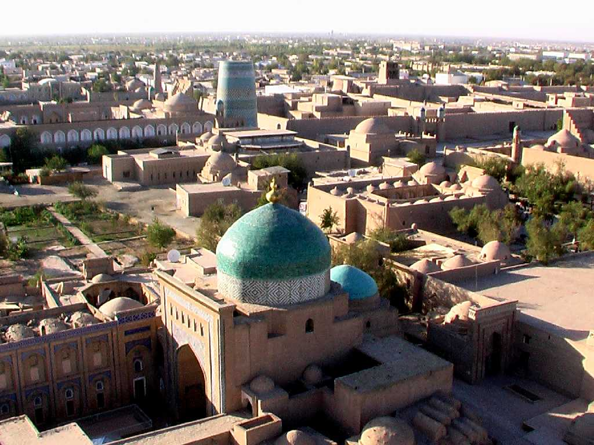
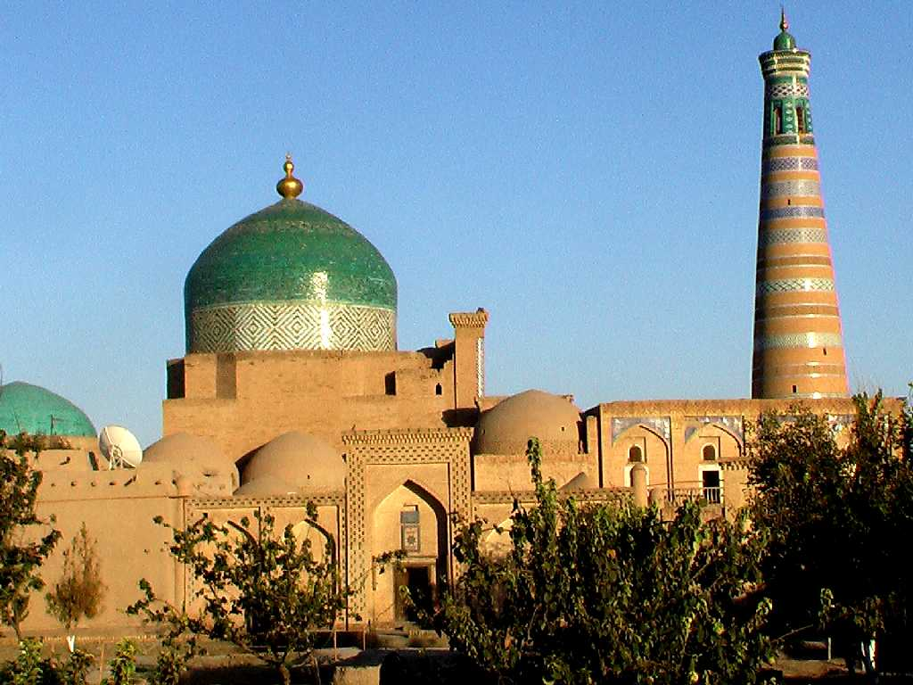
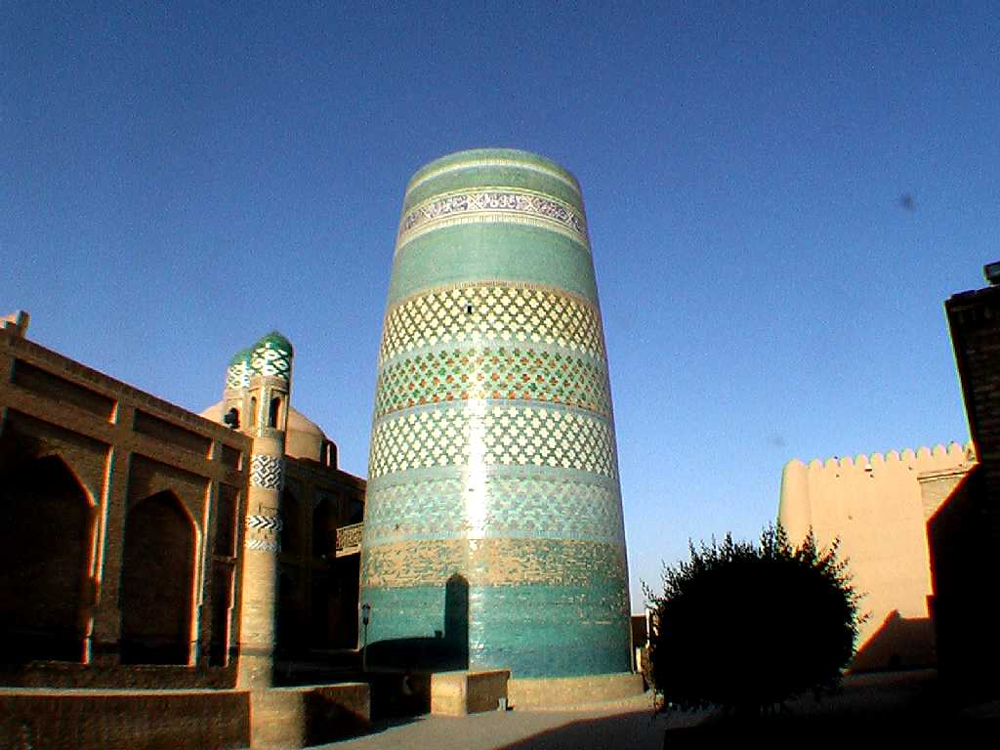
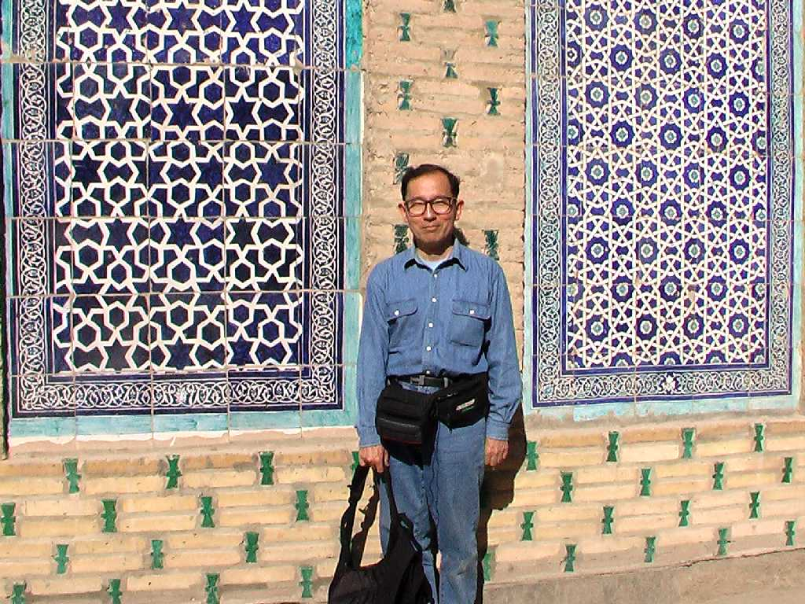

Itchan Kala Khiva
６世紀頃から町が形成され１０世紀にはホレズムの首都として１７世紀にはヒワハン国の首都として栄えた 特に西門近くにある１８５５年に創られたカルタミナルのタイル張りは美しい

Pakhlavon Mahmud Maqbarasi Islam Khoja Minaret Juma Mosque Itchan Kala
城塞都市の中央にある１０世紀に創られた金曜モスクと廟と高さ５６ｍあるミナレット

Kalta Minor Minaret
カルタミナールはトルコブルーの美しいミナレットで短いミナレットを意味し高さ２９ｍ直径１５ｍあるが計画では７０ｍ以上のミナレットを建設していたが王が亡くなったため中断した

September 23 2008 Khiva